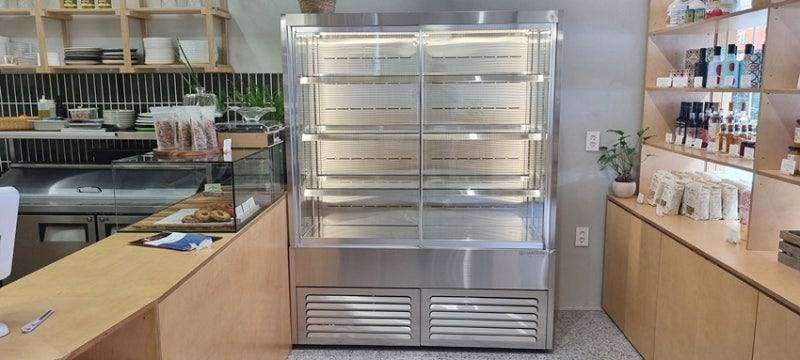
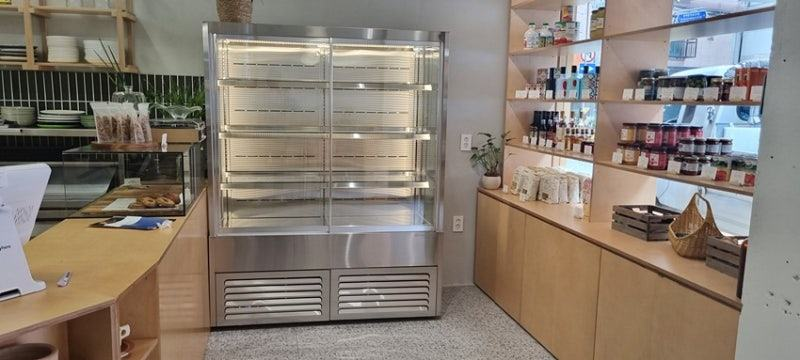
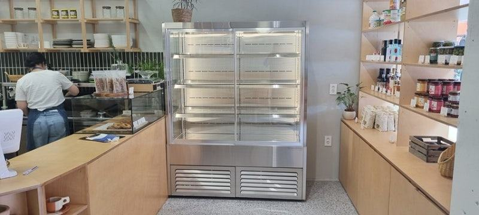
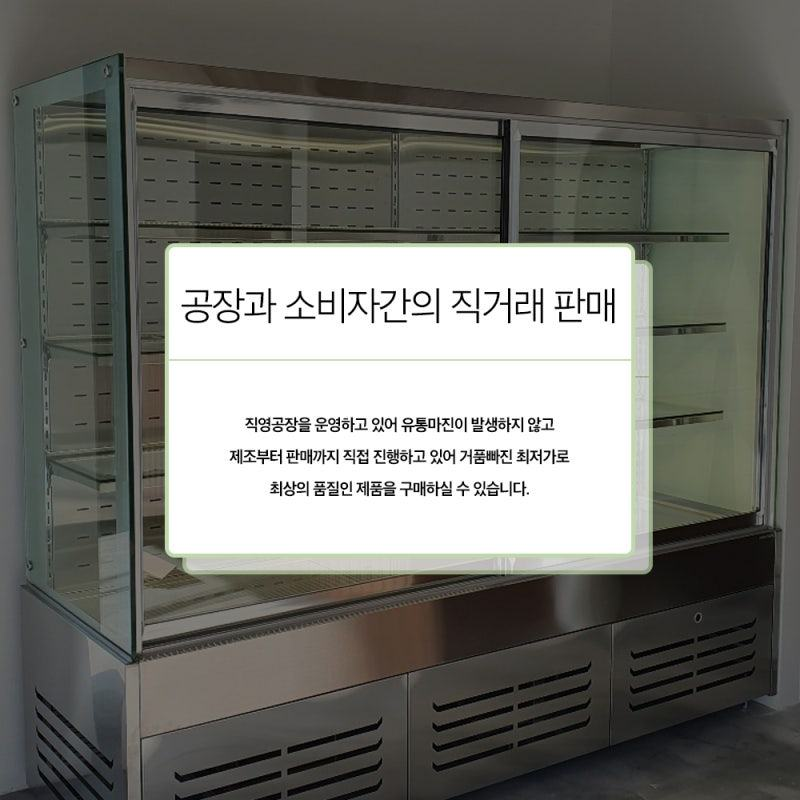
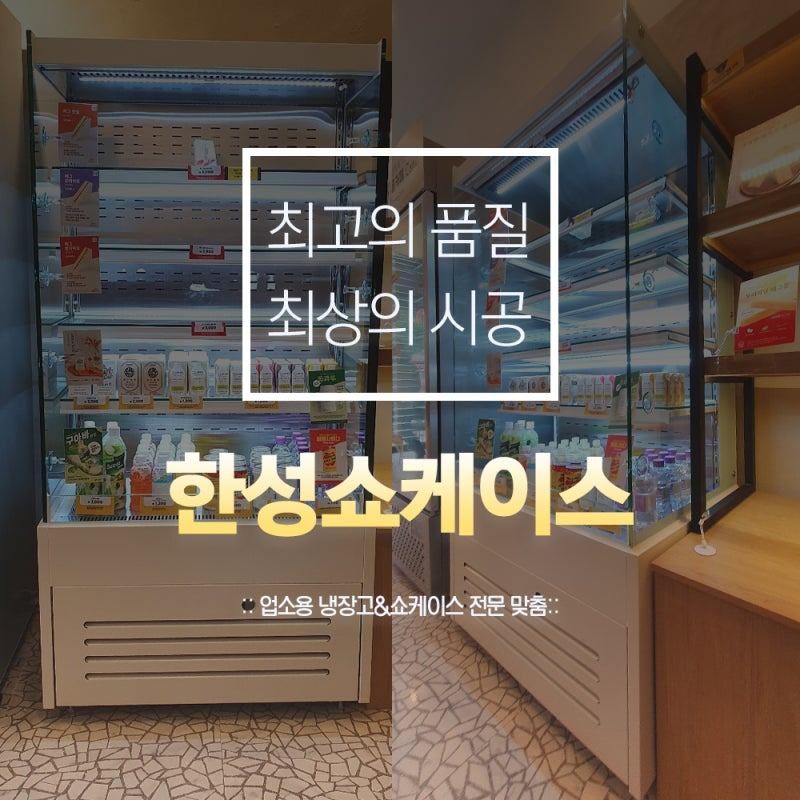

한성제품
미니쇼케이스 관리, 카운터 위 작은 쇼케이스 오래 쓰는 법

미니쇼케이스는 내부 공간이 작아 문을 한 번 열어도 온도가 크게 흔들리고, 카운터 위에 두는 경우가 많아 열이 빠질 자리가 부족해지기 쉽습니다. 주변 통풍 공간을 지키고, 유리와 패킹은 매일, 기계실 먼지는 정기적으로 닦아 주시면 오래 깨끗하게 쓰실 수 있습니다.
안녕하세요. 카페와 디저트 매장에 들어가는 소형 쇼케이스를 맞춤으로 만드는 한성쇼케이스입니다.
카운터 한쪽에 올려 두는 미니쇼케이스는 작지만 매장에서 가장 손님 가까이에 있는 장비입니다. 계산하려고 줄을 선 손님이 바로 앞에서 들여다보니, 유리에 남은 손자국이나 물방울 하나도 금방 눈에 띄죠.
작은 제품이라 관리도 간단할 거라 생각하기 쉽지만, 오히려 큰 쇼케이스보다 온도 변화에 예민하고 주변 기기 열의 영향도 많이 받습니다.
오늘은 미니쇼케이스를 오래 깨끗하게 쓰기 위한 관리 방법을 매일 할 일과 정기적으로 할 일로 나눠 정리해 보겠습니다.
1. 카운터 위 자리, 열이 빠질 틈부터
미니쇼케이스는 포스기, 커피 머신, 제빙기 사이에 끼워 두는 경우가 많습니다. 기계실 열이 빠져나갈 통풍구가 벽이나 다른 기기에 막히면 냉각이 더뎌지고, 밑부분에서 뜨거운 열이 계속 올라오게 됩니다.
가끔 쇼케이스 아랫부분이나 뒤쪽에 손을 대 보시고, 평소보다 많이 뜨겁다면 주변 물건부터 치워 보세요.
통풍구 앞에 메뉴판이나 컵 홀더를 세워 두는 것도 흔히 보는 실수입니다.
새로 들이실 때는 놓을 자리의 폭과 높이뿐 아니라 뒤쪽과 옆쪽에 띄울 공간까지 함께 재 두세요. 카운터 상판 아래로 기계실을 넣는 방식이라면 하부장에 통풍구를 내야 하니 인테리어 단계에서 미리 맞추는 편이 좋습니다.
- 통풍구 앞뒤에 물건을 두지 마세요.
- 커피 머신과 바로 붙여 두지 마세요.
- 아랫부분이 지나치게 뜨겁지 않은지 만져 보세요.
2. 매일 할 일: 유리와 문 패킹
미니쇼케이스는 사방이 유리인 제품이 많아 손자국과 물 얼룩이 잘 보입니다. 마감 후 부드러운 천으로 바깥 유리를 닦고, 안쪽은 디저트를 꺼낸 뒤 물기를 꼭 짠 행주로 닦아 주세요.
거친 수세미나 연마제는 유리에 잔흠집을 남기니 피하는 게 좋습니다.
문 패킹 홈에는 크림 부스러기나 슈거파우더가 잘 끼입니다. 이게 쌓이면 문이 꼭 닫히지 않아 냉기가 새고 결로가 생깁니다.
면봉이나 마른 천으로 홈을 한 번씩 훑어 주시면 됩니다.


3. 문 여닫는 습관과 진열 양
내부가 작은 만큼 문을 오래 열어 두면 금방 온도가 오릅니다. 손님이 고르는 동안 문을 열어 두기보다 고른 뒤 꺼내 드리는 방식이 디저트 상태를 지키는 데 유리합니다.
공간이 아깝다고 디저트를 빽빽하게 채우면 냉기가 도는 길이 막혀 칸마다 온도 차가 생깁니다. 접시와 접시 사이를 조금씩 띄우고, 냉기가 나오는 곳을 막지 않게 진열해 주세요.
- 손님이 고른 뒤에 문을 열어 꺼내 드리세요.
- 디저트 사이 간격을 두고 진열하세요.
4. 정기적으로 할 일: 기계실과 결로 점검
주기적으로 전원을 끄고 기계실 통풍구 주변 먼지를 솔이나 청소기로 제거해 주세요. 카페는 원두 가루나 종이컵 먼지가 많이 날려서 생각보다 빨리 쌓입니다.
유리에 결로가 생겼다면 먼저 천으로 물기를 닦아 내고, 매장 냉난방 바람이 쇼케이스에 직접 닿지 않는지 확인해 보세요.
온도 변화가 큰 자리는 유리에 김이 서리기 쉽습니다. 관리를 해도 결로가 반복되거나 온도가 잘 유지되지 않으면 점검을 요청해 주세요.
장기간 휴무로 전원을 끄실 때는 디저트를 모두 꺼내고 문을 조금 열어 두어 안쪽에 냄새와 습기가 차지 않게 해 주세요.
다시 켤 때는 충분히 온도가 내려간 것을 확인한 뒤 진열을 시작하시는 게 안전합니다.
체크리스트
- 통풍구 주변 물건 치우기
- 바깥 유리 마감 후 닦기
- 문 패킹 홈 부스러기 제거
- 문 열어 두는 시간 줄이기
- 기계실 먼지 정기 청소
- 냉난방 바람 직접 닿는지 확인
실버 디자인 소형쇼케이스를 들인 디저트 카페
디저트 카페를 운영하시던 고객님께서 디저트를 일정한 온도로 관리하면서 예쁘게 보여 줄 소형 쇼케이스가 필요하다며 문의를 주셨습니다.
매장 크기에 꼭 맞는 사이즈와 세련된 실버 디자인을 원하셨습니다.
말씀하신 디자인에 맞춰 깨끗해 보이는 외관으로 제작하고, 디저트가 더 돋보이도록 LED 조명도 함께 설치했습니다.
제작 후에는 시공 담당자가 매장에서 꼼꼼하게 설치를 마쳤습니다. 참고로 여름철에는 소형 쇼케이스 주문이 몰려 상담부터 제작까지 시간이 더 걸릴 수 있으니 일정에 여유를 두고 문의해 주세요.





자주 묻는 질문
미니쇼케이스 안쪽은 어떤 세제로 닦나요?
중성세제를 묽게 푼 물에 적신 뒤 꼭 짠 행주로 닦고, 마른 천으로 물기를 마무리하시면 됩니다. 향이 강한 세제는 디저트에 냄새가 밸 수 있어 피하는 게 좋습니다.
청소할 때 전원을 꺼야 하나요?
기계실이나 통풍구 주변을 청소할 때는 반드시 전원을 끄고 작업해 주세요. 유리 바깥면만 닦을 때는 켜 둔 상태로도 괜찮습니다.
관리해도 온도가 잘 안 맞으면 어떻게 하나요?
통풍과 청소를 확인한 뒤에도 같다면 점검이 필요합니다. 한성쇼케이스는 전국 240여 개 A/S 센터를 운영하니 대표전화 031-986-2458로 연락해 주세요.
매장 조건에 맞춰 만드는 한성쇼케이스
원하시는 제품 사진과 설치할 공간 사진만 보내 주셔도 매장에 맞는 구성을 추천해 드립니다.
- 전국 240여 개 A/S 전담 센터 운영
- 본사 대량 자재 매입으로 품질 대비 합리적인 가격
- 유럽제·삼성 냉각 콤프레셔 적용
- 국내 최초 쇼케이스 전문 디자이너 상주
매장 폭과 원하는 진열 구성을 알려 주세요. 실측과 견적을 안내해 드립니다.
031-986-2458